Префектура Нара · город Нара · еда
Два ужина у парка Нара: баскская смелость akordu и сезонный кайсэки Tsukumo
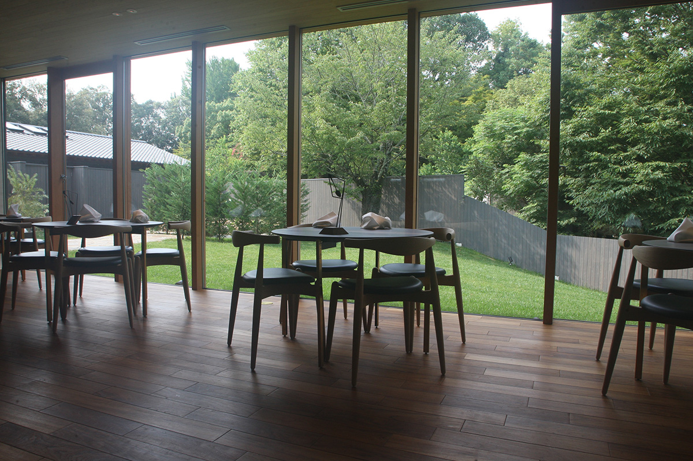
В древней столице Японии есть два ресторана, где продукты Нары рассказывают истории. В akordu повар, учившийся в Стране Басков, готовит «вкус воспоминаний», а в Tsukumo повар школы кайсэки строит ужин вокруг праздников и обрядов старой Нары.
akordu
Ресторан, к которому идут через парк
От станции JR Нара до ресторана akordu около 15 минут пешком. Хочется взять такси, но шеф Хироси Кавасима советует гостям не спешить и пройти через парк Нара. Так лучше понимаешь, почему это место особенное. За зданием администрации префектуры воздух меняется: высокие деревья тянутся к небу, ухоженные газоны уходят вдаль, и из-за кустов то и дело выходят олени. На мгновение кажется, что попал в старую столицу VIII века.
Ещё немного, и у юго-западного угла бывшей территории храма Тодайдзи появляется здание с солидными воротами. Это и есть akordu.
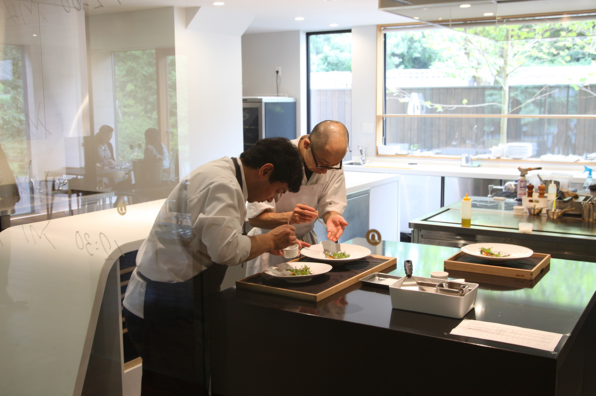
Вход простой, из бетона и стекла, а за окнами густая зелень. «Весной здесь роскошно цветёт сакура, осенью очень красивые клёны», рассказывает шеф. Двухэтажный дом стоит на участке около 1 150 квадратных метров. На первом этаже обеденный зал и кухня, на втором банкетный зал и комната ожидания.
Сюда ресторан переехал в декабре 2016 года. Совпали две вещи: прежнее здание обветшало, а префектура как раз искала ресторан для этого участка. Первое akordu Хироси Кавасима открыл в 2008 году в Томио, на западе города, в переделанной подстанции эпохи Тайсё (1912–1926). Тот кирпичный дом тоже был хорош, но новое место по-настоящему сказочное: ещё до первого блюда чувствуешь, что отдохнул.
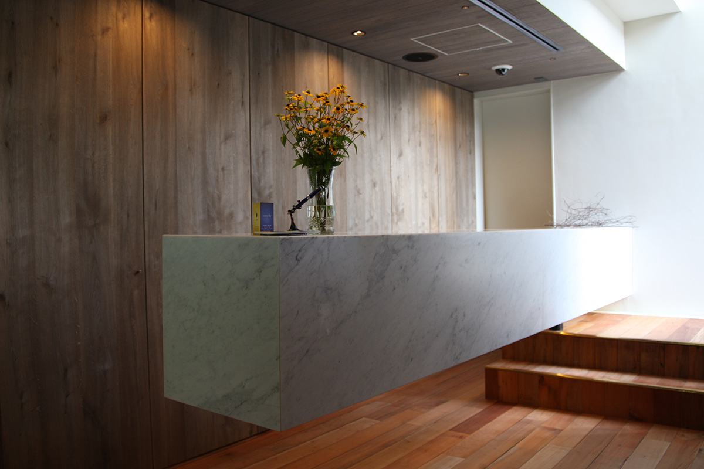
Хироси Кавасима родился в 1971 году в Токио. Окончив кулинарную школу в Осаке, он работал в отелях Канто и Кансая, в том числе в ресторанном обслуживании. В 33 года он уехал в Испанию и полгода стажировался в баскском ресторане Mugaritz.
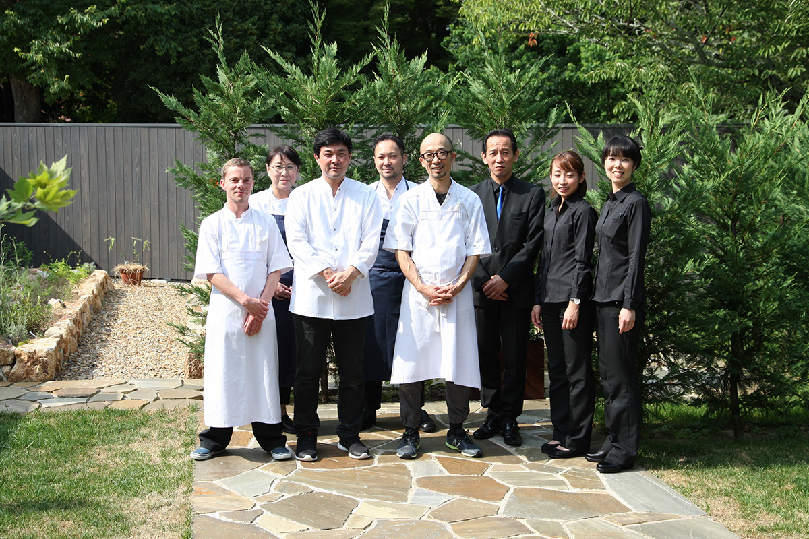
Блюдо, которое говорит за шефа
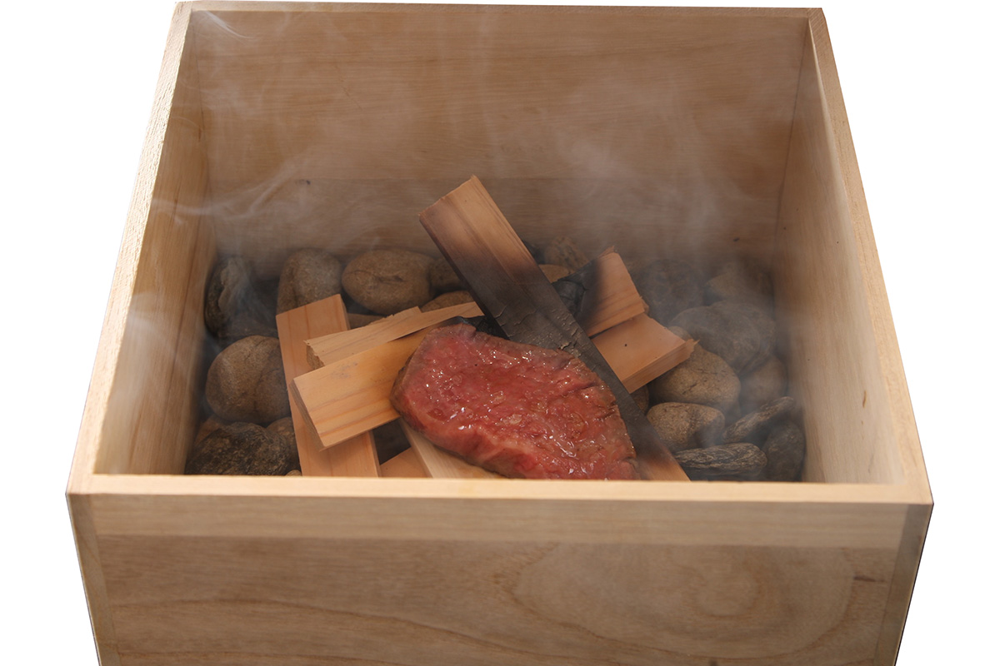
В деревянном ящике дымится говядина Ямато вместе с химо-тогараси, тонким перцем из традиционных овощей Ямато. Коптят их на дощечках гомаги, которые сжигают в храмовом огненном обряде гома. По словам шефа, образ взят из легенды об изгнании демона, записанной в «Сёку нихонги», летописи VIII века. Кухня akordu свободно перемещается во времени.
Память
Почему ресторан назвали «воспоминанием»
Ужин начинается с чашки обжаренного чая ходзитя из Нары с травами. Во рту одновременно поджаренный аромат и свежесть, и вдруг вспоминается летний дом в горах, куда ездил в детстве на каникулы: запах простого чая и травы.
«Акордю» на баскском языке значит «воспоминание». Для Хироси Кавасимы это ключевое слово всей кухни. Аромат и цвет продукта будят память, а память подсказывает способ приготовления и подачу. Свои воспоминания шеф гостям не навязывает: он хочет, чтобы каждый за столом нашёл в блюде что-то счастливое из собственной жизни.
Начинал он с французской кухни, где техника, рецептура и философия выстроены в стройную систему. Возьмём простой салат: по французским правилам овощи и заправка перемешаны так, чтобы каждый кусочек был одинаковым на вкус. «А мне всегда казалось, что пусть где-то будет солонее, где-то нет. По-моему, так даже вкуснее». Техника и рецептура нужны, чтобы блюдо у всех выходило одинаковым, но где тогда сам повар?
В те годы испанская кухня переживала революцию. Пена и жидкий азот, блюда «из лаборатории» вызывали споры, но главный посыл звучал так: готовить можно свободнее. Его подхватили молодые повара по всему миру, и Хироси Кавасима тоже. Больше всего его притягивали блюда Андони Луиса Адуриса из Mugaritz, и в 34 года он поехал туда. В ресторане своей мечты он увидел салат из 70 видов овощей и трав, заправленный сырным супом. Этот салат никогда не бывает одинаковым два дня подряд: растения растут, и вкус меняется. В тарелке была сама жизнь природы.
«Вот оно, послание повара!» С этой мыслью шеф вернулся домой и в 2008 году открыл akordu с современной испанской кухней. Блюда из традиционных овощей Нары и тщательно выбранных продуктов сразу заставили о нём говорить. В новом здании ресторан взялся за экологию: не производить мусора, использовать продукт целиком и следить за этим в каждой мелочи.
Ужин
Десять блюд одного вечера
Вечерний сет из десяти с небольшим блюд стоил 13 000 иен без налога и сервисного сбора 10% (в 2020 году). «Даже если гость не уловит, что я хотел сказать, сочетания всё равно понравятся. Не думайте слишком много», говорит шеф. После ужина остаётся ощущение лёгкости: блюда то удивляют, то смешат, то поднимают настроение.
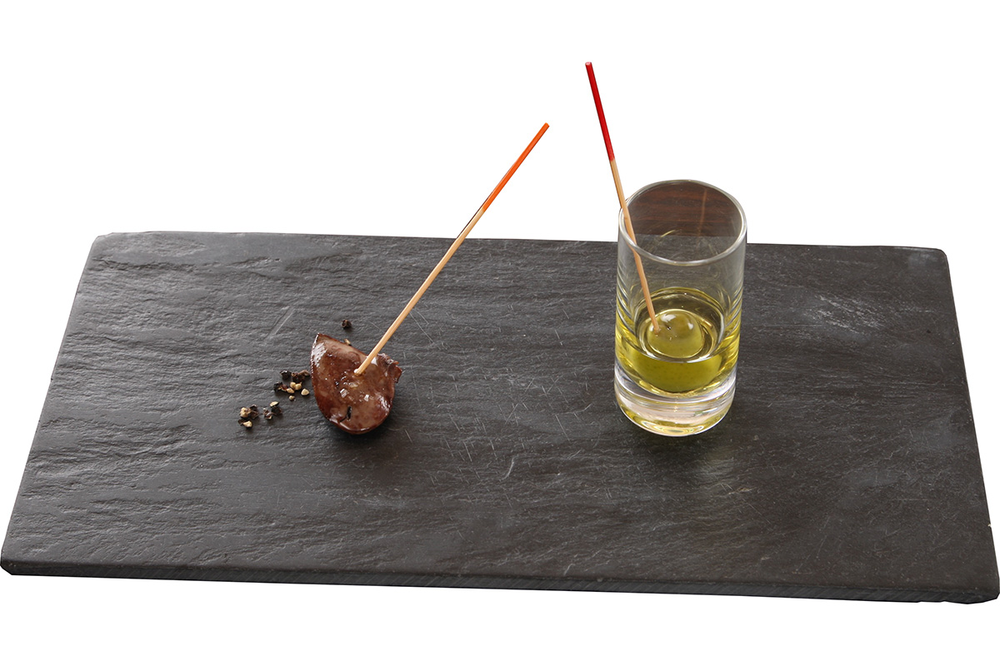
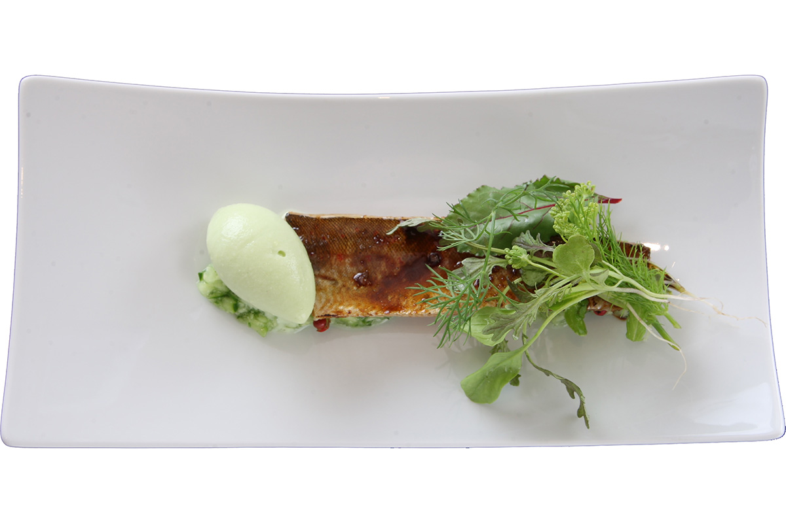
В горной деревне Нодзэгава на юге префектуры разводят форель амаго. Шефа поразила сладкая томлёная амаго местного приготовления, и он передаёт этот вкус бальзамическим уксусом, а свежесть горной реки прячет в мороженое. Ещё одно блюдо из этого ужина: куриная печень конфи и сырой кальмар с древней приправой хисио. Хисио считают предком соевого соуса и старейшей приправой Японии, она упоминается ещё в антологии «Манъёсю». Её глубокий вкус держит в равновесии мягкую испанскую текстуру печени и кальмара.
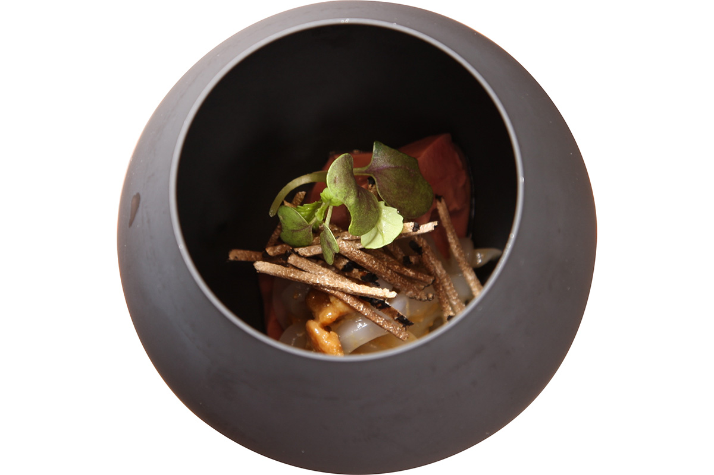
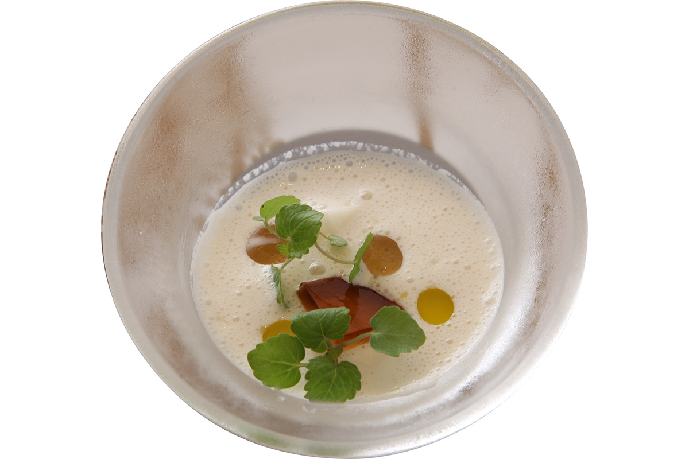
Ахобланко это простой холодный суп, который готовят по всему югу Испании, иногда с дыней или виноградом. Японский ответ шефа: сладость старинной дыни макуваури. Следом идёт лапша с водорослями от старой лапшичной мастерской «Мива Ямамото», знаменитой лапшой сомэн. В тесто подмешан порошок морских водорослей, а аромат морского ушка усиливает запах прибоя. В Наре нет моря, поэтому блюдо, напоминающее о море, запоминается особенно.
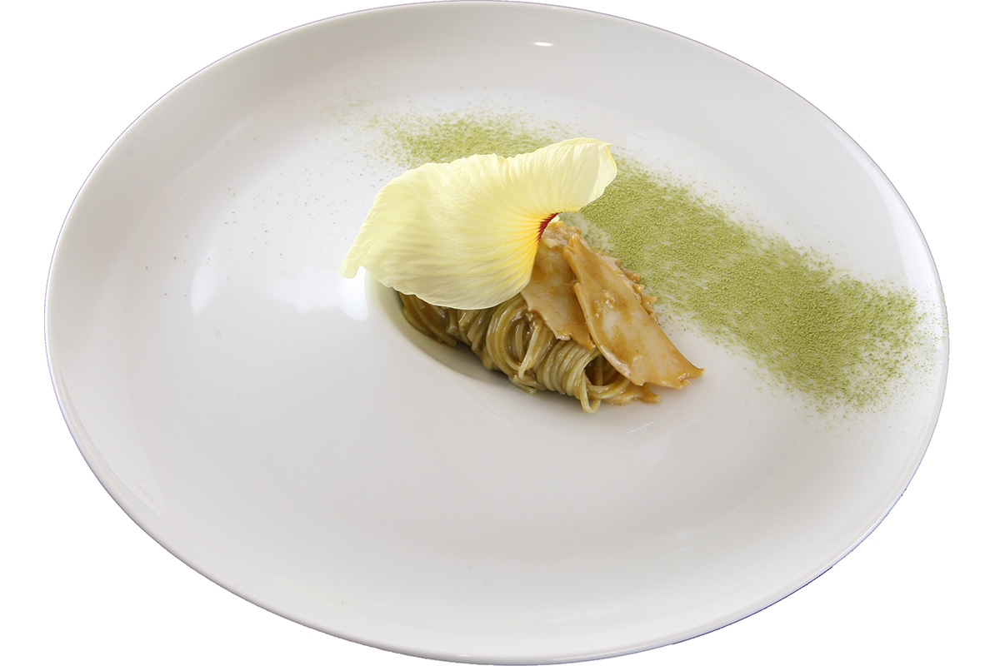
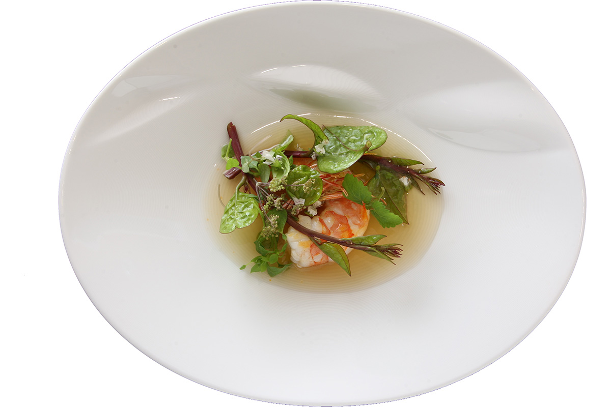
Креветки шеф использует часто, эти из префектуры Вакаяма: с лета до осени они дают особенно насыщенный бульон. К ним травы, базелла и звездчатка, и запах рисовой соломы. Затем жареный угорь хамо с тартаром из свёклы с её землистым ароматом. Свёклу мелко рубят, и текстура получается приятной. Васаби бьёт в нос, а травяной коктейль в духе мохито освежает вкус.
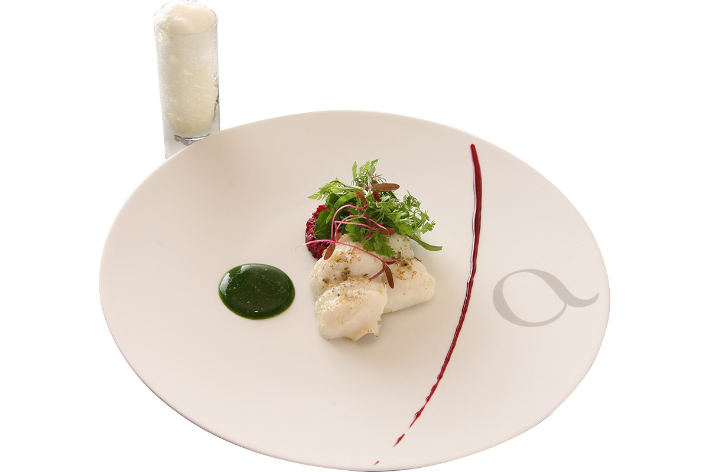
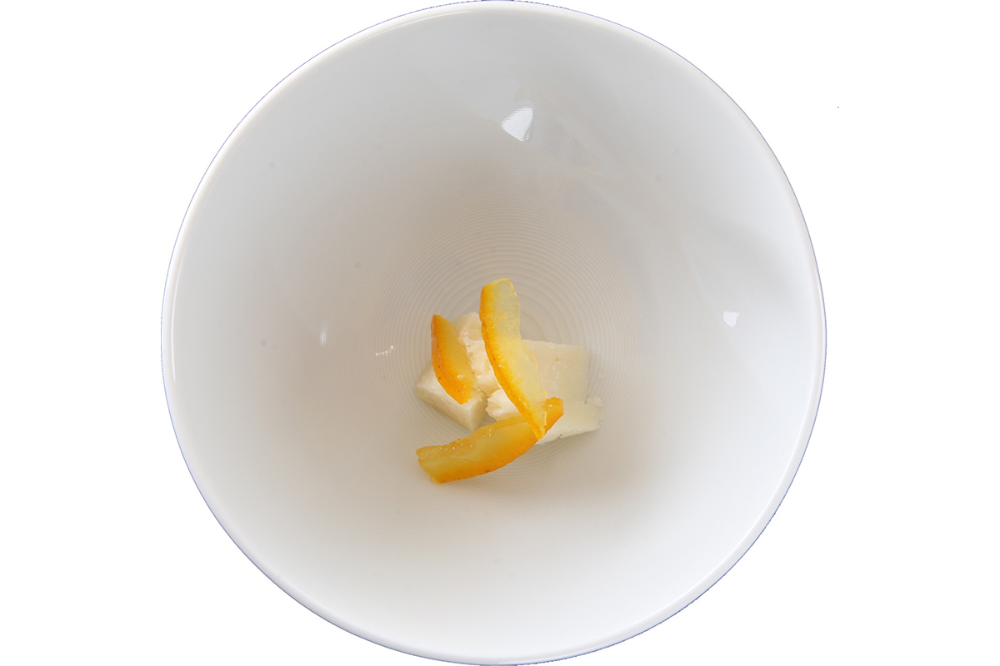
Идиасабаль это баскский сыр из овечьего молока, полутвёрдый и дымный. Хассаку из Кацураги дозревают на дереве с января по июнь, поэтому они очень сладкие. Между основными блюдами и десертом шеф по привычке ставит что-то с сыром или десерт из овощей. Тарт с мягкой рикоттой подают с соусом из инжира. Финал: десерт из фруктов и моркови, собранных по всей округе, с эвкалиптом, ванилью и чёрным перцем.
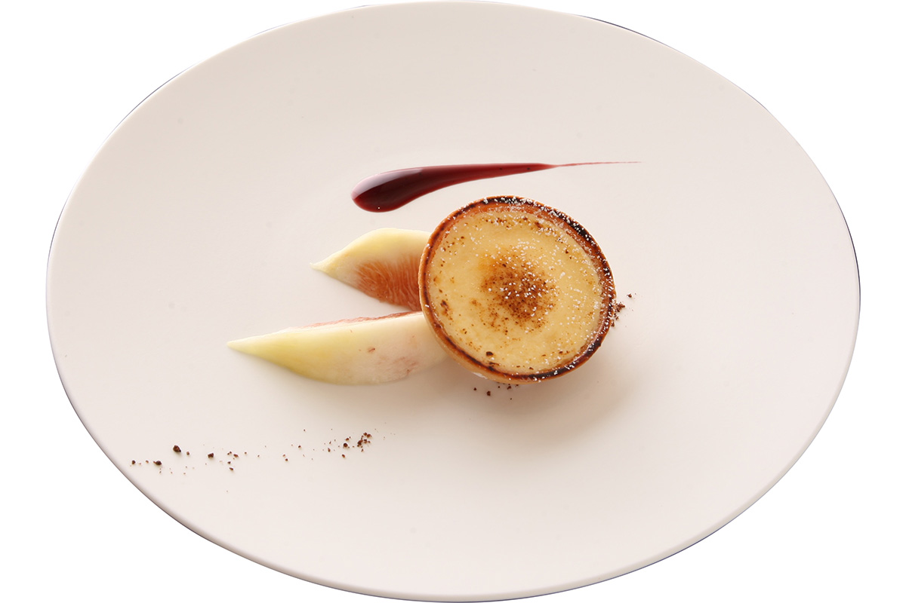
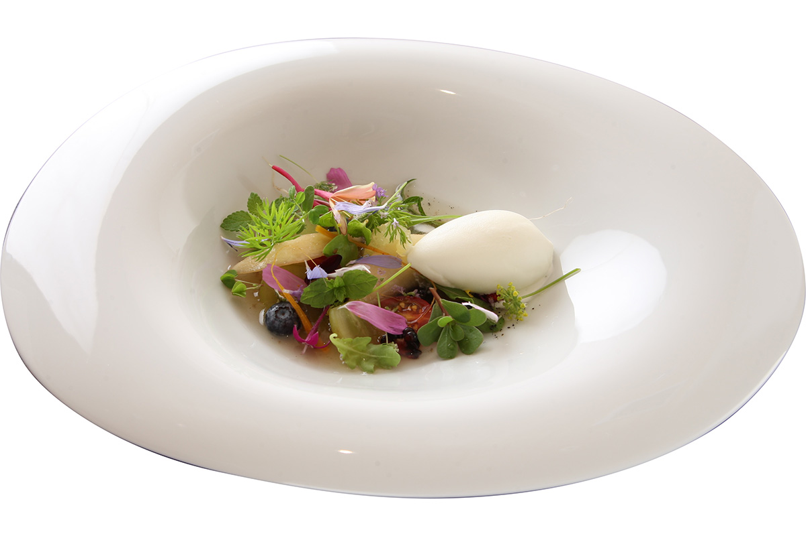
На столе стоит маленькая коробочка с карточками, на которых написаны названия блюд сета. «Это скорее главный продукт, чем название. Как и из чего, я расскажу словами. А дальше пусть гость просто ест».
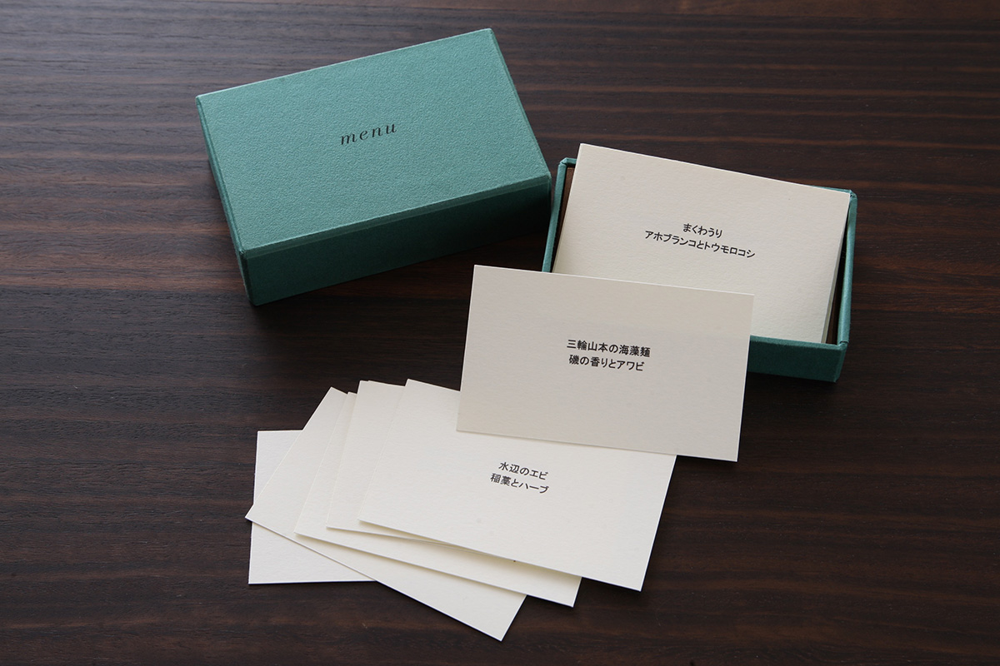
akordu
- Адрес
- префектура Нара, город Нара, Суймон-тё, 70-1-3-1
- Телефон
- +81 742-77-2525
- Часы работы
- 12:00–15:30 (последний заказ в 13:00), 18:00–22:30 (последний заказ в 19:00)
- Выходные
- понедельник, бывают нерегулярные выходные
- Цены / Вход
- обед 6 500 иен, ужин 13 000 иен (без налога и сервисного сбора)
- Сайт
- akordu.com
Tsukumo
Кайсэки, который копает вглубь
Ресторан Tsukumo пишется одним иероглифом «белый», а читается «цукумо». Белый означает начало всего, а «цукумо», старое слово для числа «девяносто девять», хозяин связывает с вечностью. Его цель он называет не развитием, а углублением: в японском эти слова звучат одинаково, «синка», и разница только в иероглифах.
От станции Кинтэцу Нара сюда около 10 минут на машине. В июне 2021 года ресторан переехал в отдельный дом, совсем не похожий на ресторан. По тёмной дорожке входишь в другой мир, где тепло и спокойно. Стойку из каштана из Синсю, которому было 200 лет, хозяин считает своей сценой. Напряжения здесь нет, и дело в стенах: они отделаны японской бумагой и глиной, в которую подмешана земля из мест, связанных с жизнью хозяина.
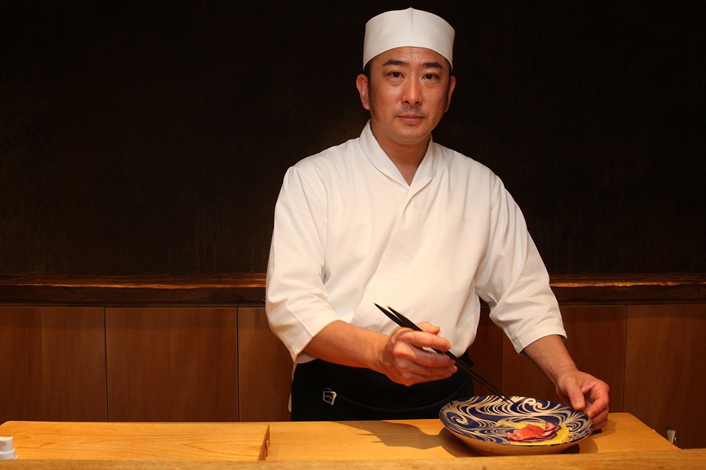
Масато Нисихара родился в 1977 году в Хакате, районе Фукуоки, и вырос в Токио. На следующий день после окончания школы он начал учиться в главном ресторане Kitcho в киотском Арасияме. «Как только решил стать поваром, я знал, что хочу учиться в лучшем ресторане японской кухни». Десять лет он изучал кайсэки, которое называют вершиной японского застолья. Потом два года был шеф-поваром известного ресторана лапши соба в Каруидзаве. В горной префектуре Нагано, где нет моря, он смело составил меню совсем без морепродуктов, и его хвалили.
Затем был Нью-Йорк: три года он руководил кухней ресторана постной буддийской кухни, который открыла старая киотская лавка пшеничной клейковины фу. За это время ресторан получил две звезды нью-йоркского гида Michelin. Ещё три года он работал в лондонском ресторане UMU, куда его пригласил старший товарищ по Kitcho.
«За границей я заново понял, как устроена японская кухня. Когда узнал, что чайный кайсэки вырос из постной буддийской кухни, почувствовал, как важно знать глубоко». Отсюда и пошла идея углубления.
В 2015 году он открыл собственный ресторан в Наре. «Это родина жены, мы заезжали сюда каждый раз, когда возвращались в Японию, и я понял, как здесь хорошо. В Киото летом, во время праздника Гион, готовят угря хамо и рисовые пирожки тимаки: еда и культура срослись сами собой. В Наре такой связи гораздо меньше. Я хочу готовить из продуктов этой земли и связывать их с её культурой и обычаями. Здесь можно думать свободно».
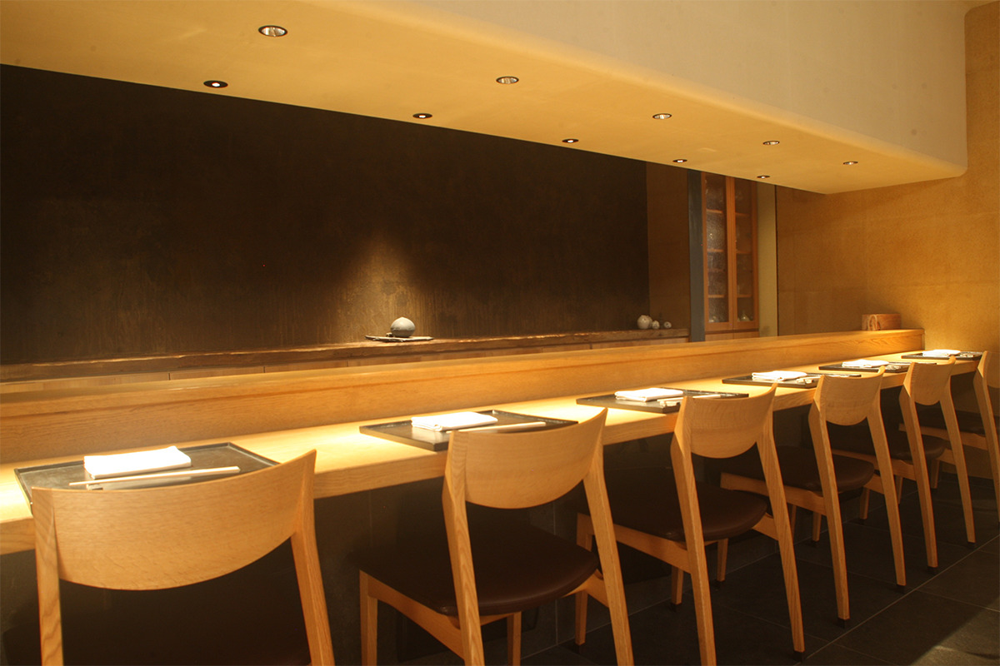
Ресторан необычный, но любовь к Наре привлекла многих. Каждый ужин посвящён сезонному празднику или синтоистскому обряду, и под него хозяин находит особенные продукты Нары. «Префектура и город стали приглашать меня рассказывать о кухне Нары. Связей с производителями всё больше, и каждый раз узнаёшь что-то новое». Из традиционных овощей Ямато, которых официально 20 видов, многие появляются в его меню. Посуду он тоже подбирает под тему и историю блюда.
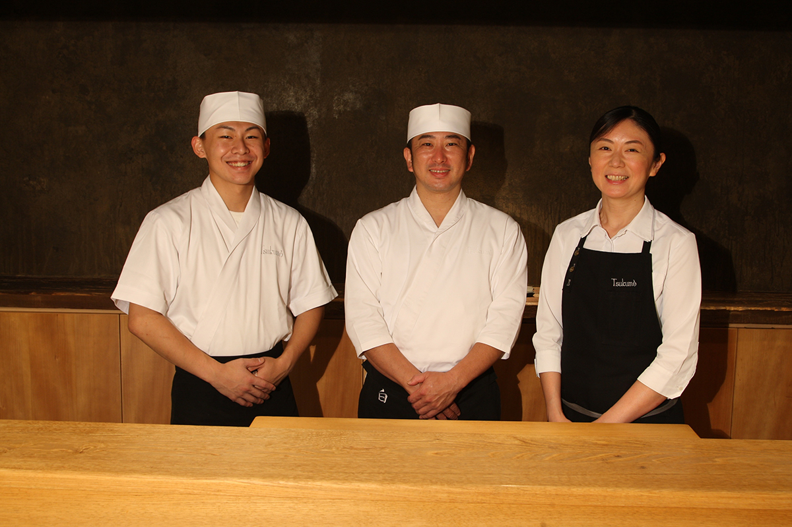
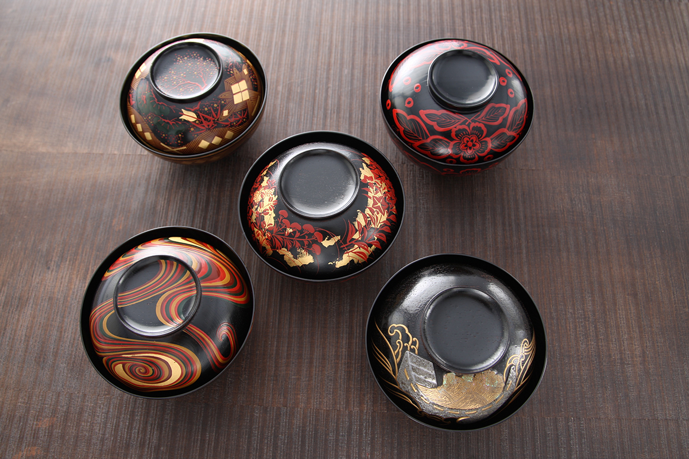
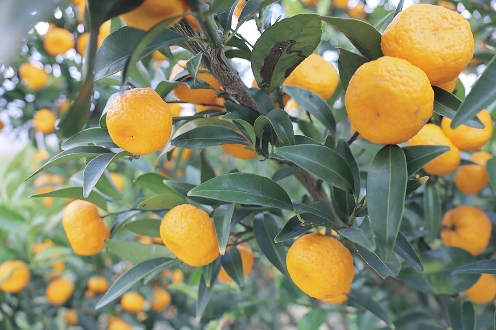
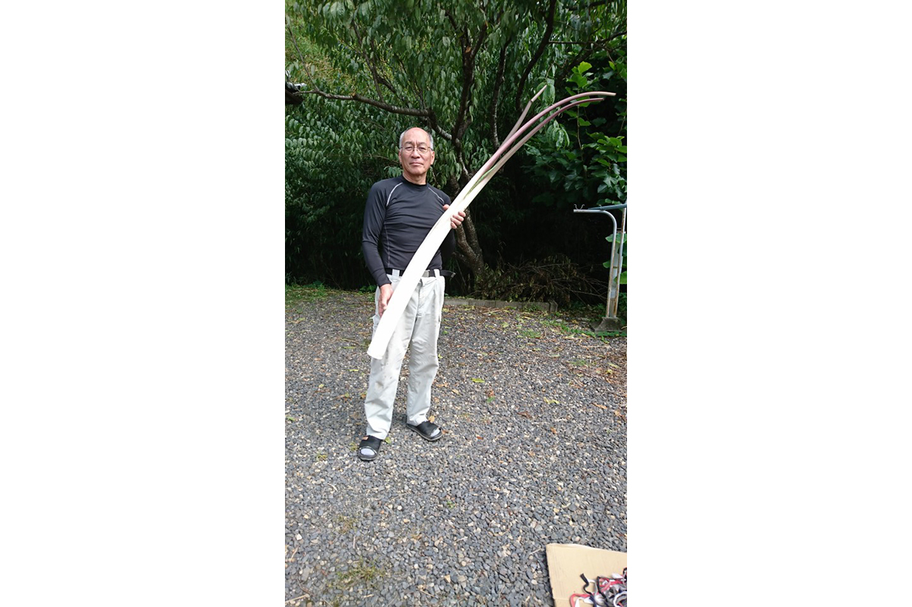
Ужин о празднике Унэмэ
Одно из блюд посвящено празднику Унэмэ. Его проводят каждый год в ночь осеннего полнолуния у пруда Сарусава в Наре, одном из трёх самых знаменитых мест Японии для любования луной. Унэмэ называли придворных дам, служивших императору, и эта история стала сюжетом пьесы театра но. В конце праздника деве Унэмэ подносят цветочный веер ханаоги, и блюдо повторяет его форму.
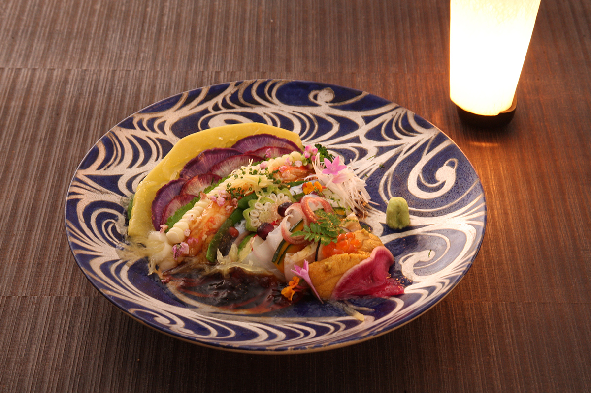
Овощи и морепродукты лежат веером, а пряности, японский имбирь мёга, молодые листья перечного дерева и пальчиковый лайм, вместе с тремя желе на бульонах связывают вкусы. Выложить такое блюдо занимает около получаса. Блюдо сделала керамистка из Каруидзавы: серебряная глазурь блестит, как гладь озера.
Девять блюд одного месяца
И днём, и вечером здесь подают один сет, который меняется каждый месяц. Девять блюд хороши и по отдельности, и как единое целое, но привычным разделам кайсэки они не подчиняются. Рыба, например, называется не сашими, а «рыба сезона». «Нара не знает моря. Подавать здесь сашими с соевым соусом и васаби слишком прямолинейно. Пусть гость видит, как я копчу рыбу на соломе, слышит, как она трещит, и чувствует запах деревни у гор». Таких находок в ужине несколько.
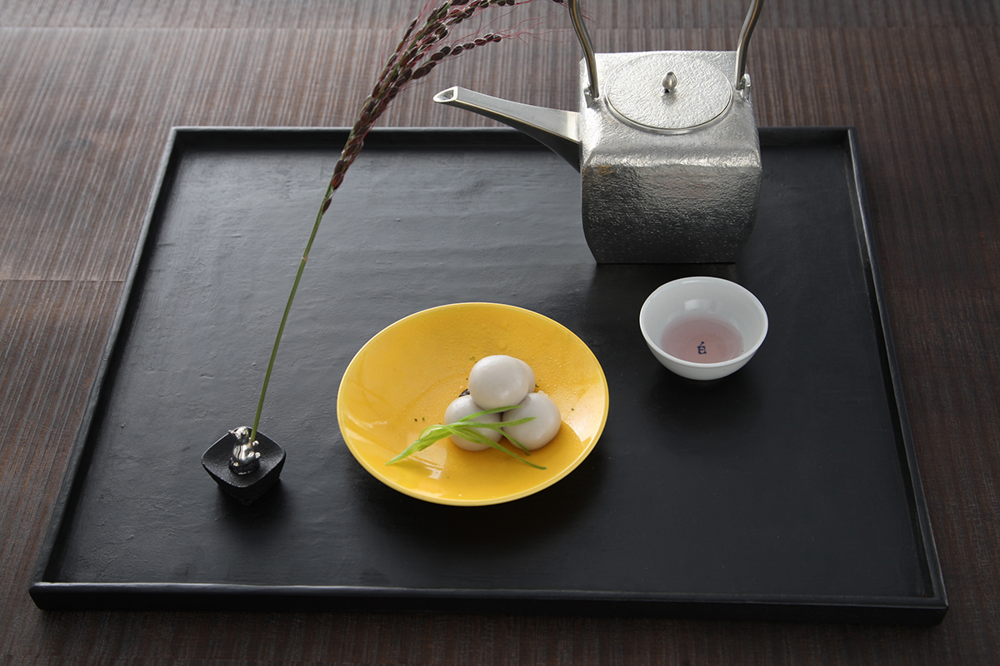
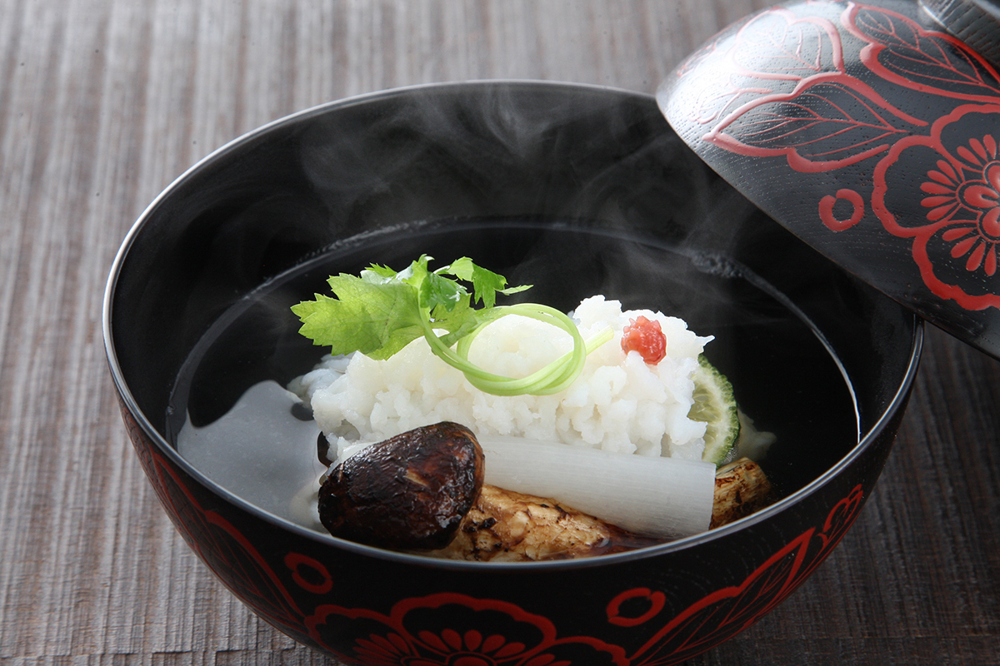
Первое блюдо посвящено любованию полной луной. Клёцки из таро едят с белым соевым соусом, пастой юдзу с перцем, имбирём и мисо храма Тодайдзи, сладковатым красным мисо по старинному храмовому рецепту. Заяц держит колос древнего красного риса, выращенного в деревне Асука. Из того же риса сделано сакэ, которое наливают перед ужином. Затем суп: летний угорь хамо и осенние грибы мацутакэ в одной чаше показывают, как сменяется сезон. Хрустящие стебли дзуйки бывают только у традиционных овощей Ямато.
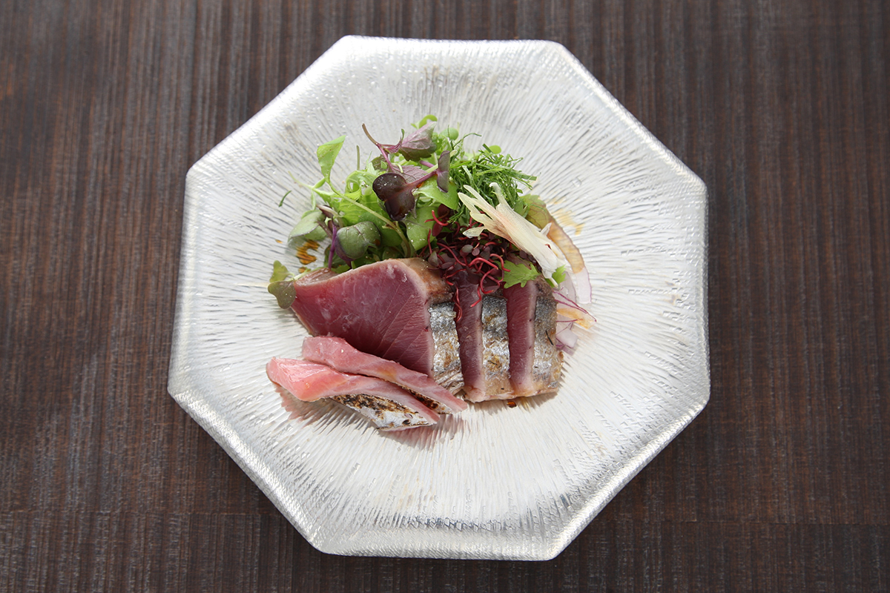
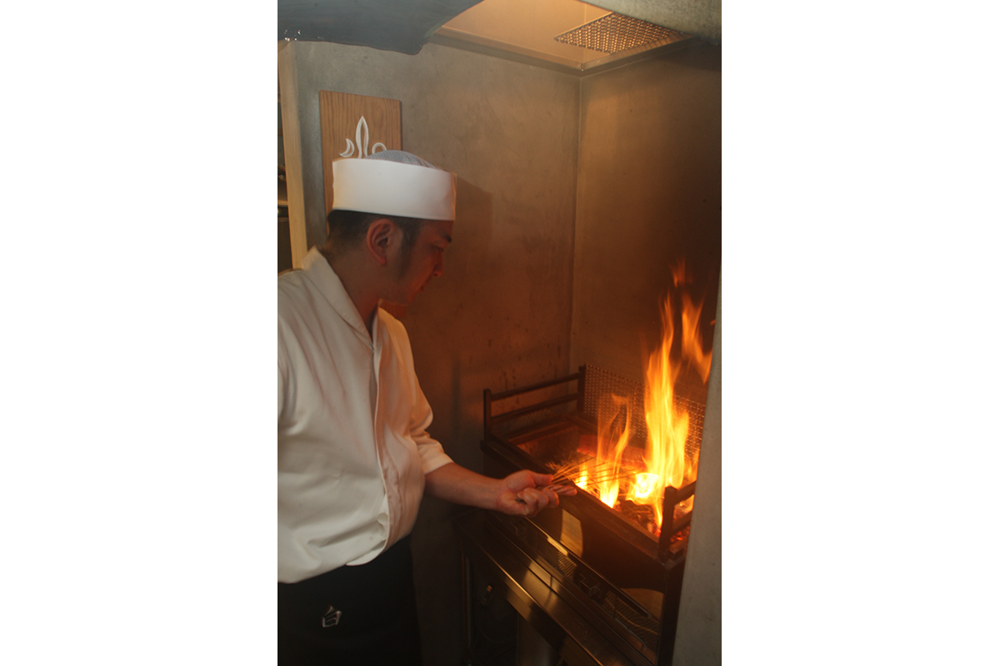
«Рыба сезона» это осенний полосатый тунец кацуо. Хозяин обжигает его на жаровне у стойки, на чёрном угле из деревни Ягю и на соломе, и аромат напоминает об осени в горной деревне. Запах, по его словам, это последняя приправа блюда. Четвёртое блюдо посвящено празднику хризантем 9 сентября: под листом гинкго лежат корень лотоса в форме хризантемы с жёлтыми и фиолетовыми лепестками, нефритовый баклажан и зелень ямато-мана, всё это под густым соусом из юбы с орехами гинкго и тонкими чипсами из каштана.
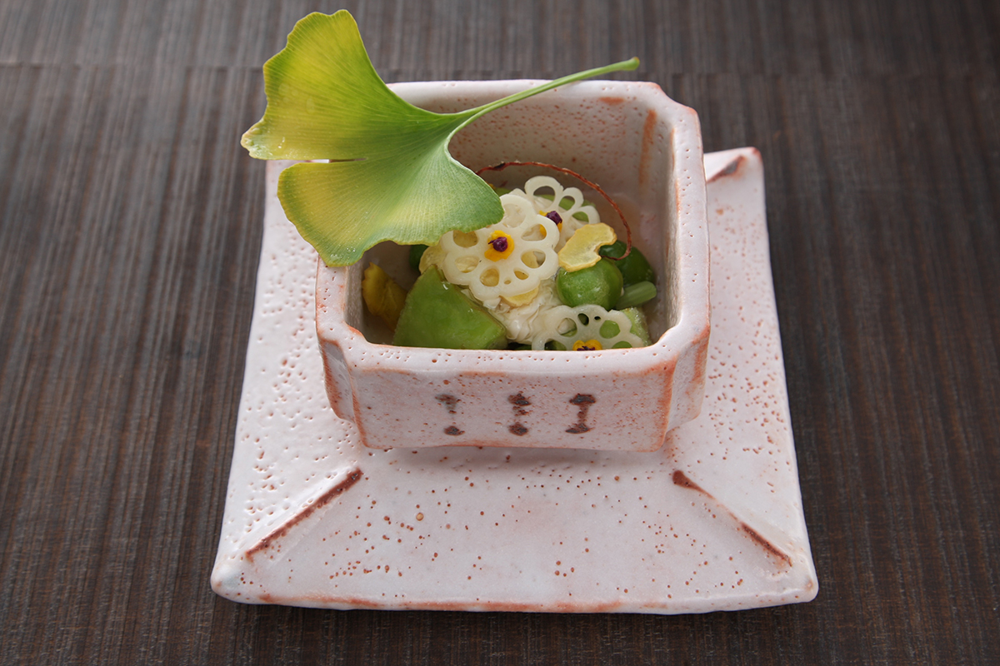
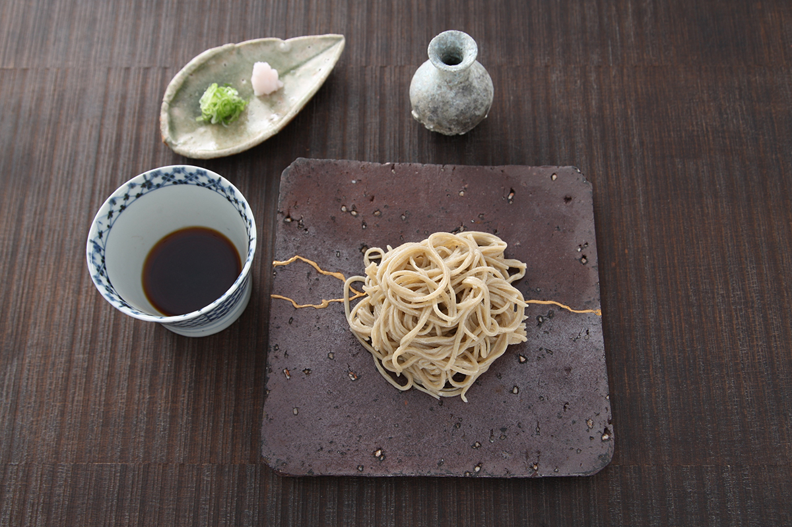
Гречневую муку хозяин берёт у трёх мельниц в Нагано. Работая с ней, он отказался от привычных пропорций и пришёл к своей: 8,5 части гречневой муки на 1,5 пшеничной. Разница в половину части чувствуется в том, как лапша скользит и пружинит.
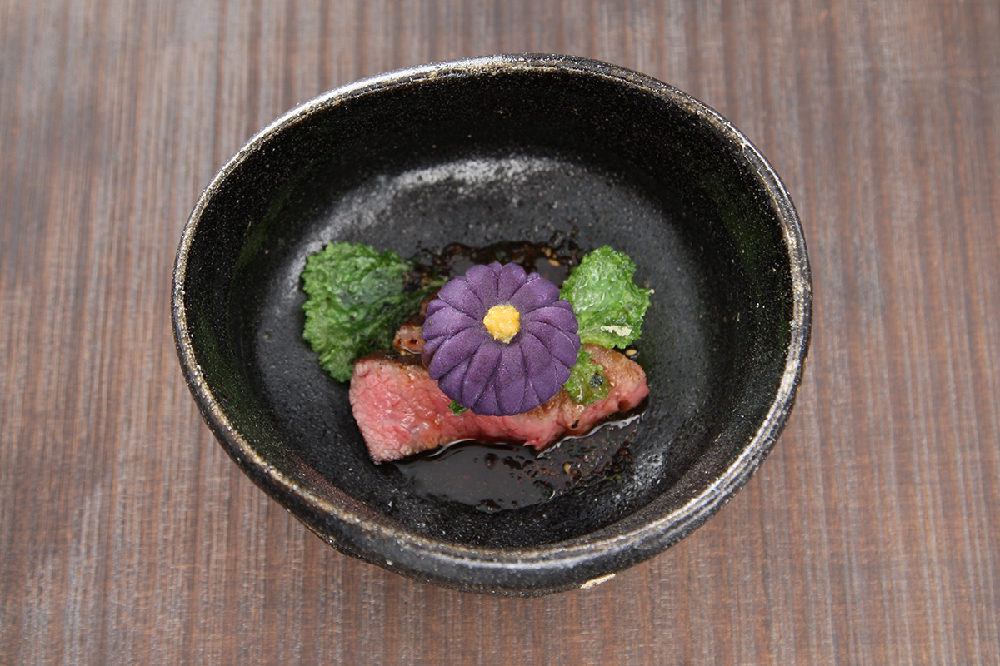
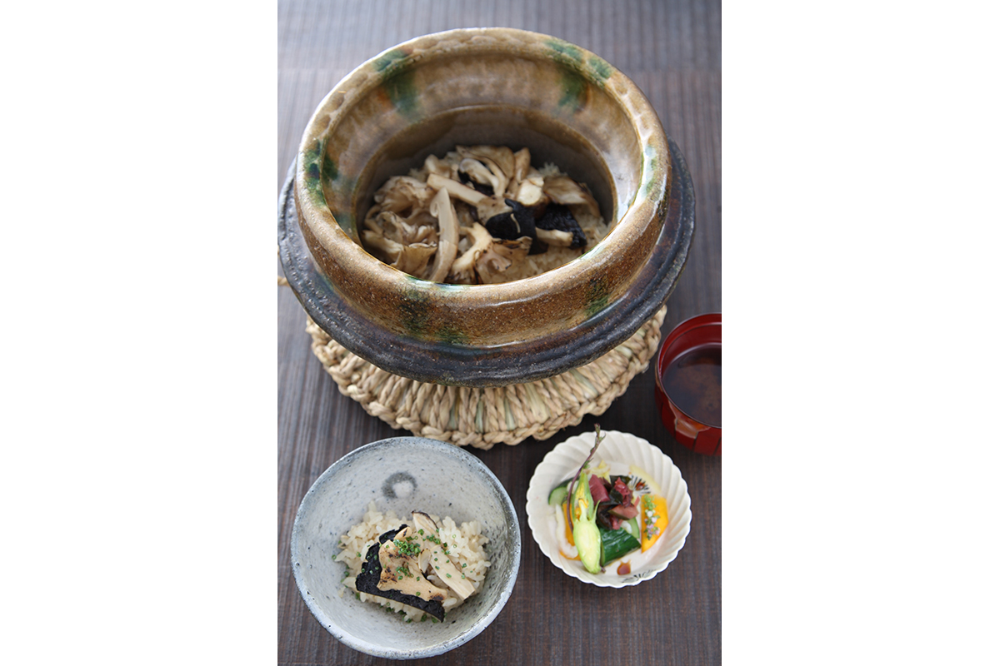
Говядину Ямато жарят на углях просто, чтобы вкус говорил сам за себя. В центре острая паста из цитруса ямато-татибана. Рис в конце ужина варят в глиняном горшке с сезонными продуктами: осенью это дикие грибы майтакэ, кототакэ и мацутакэ. Сорт риса Хинохикари занимает около 70% посевов Нары, у него мелкое сладкое зерно и приятная клейкость. На десерт подают монака с клеймом ресторана. Внутри полусушёный инжир из Ямато-Кориямы, бобовая паста и мороженое с упругими рисовыми лепёшками хабутаэ, сверху тростниковый сахар васамбон. К нему вино из инжира того же Ямато-Кориямы.
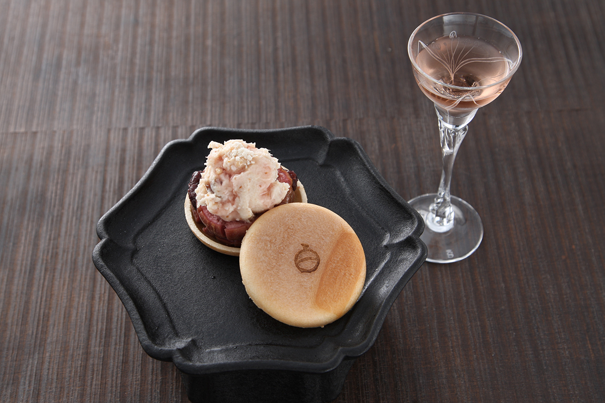
Сакэ Нары к ужину
Сакэ Нары в целом мягкое, здесь берегут вкус риса. В ресторане обычно держат 6–8 сортов, а к некоторым блюдам наливают сакэ из других префектур. Harushika «Кэгон», дзюммай дайгиндзё без разбавления, яркое и плотное, стоило 3 000 иен за го (180 мл) в 2022 году. «Мимуро-суги», дзюммай гиндзё осеннего розлива хияороси из риса Омати, с мягким ароматом, 1 600 иен. «Кудзира», нефильтрованное непастеризованное дзюммай, на рисе Ямада-нисики, крепкое, но так хорошо сбалансировано, что с каждым глотком раскрывается, 1 400 иен.
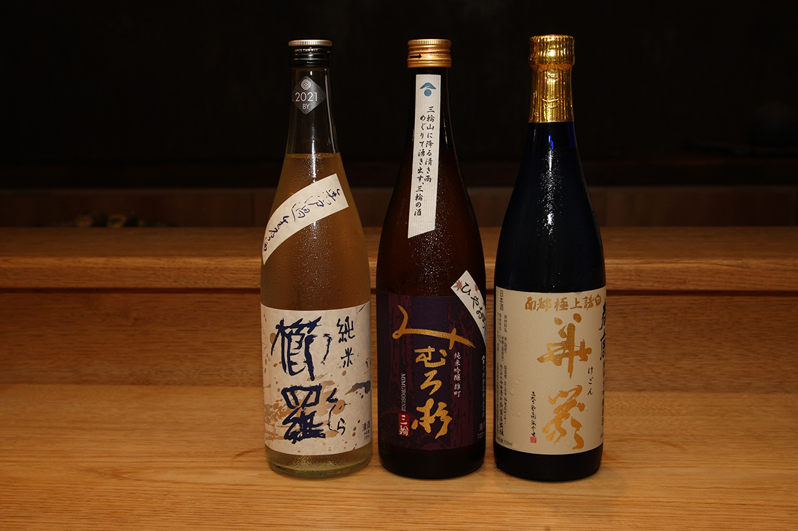
Tsukumo
- Адрес
- префектура Нара, город Нара, Кидэра-тё, 968
- Телефон
- +81 742-22-9707
- Часы работы
- обед с 12:00, ужин с 18:00 (все гости начинают одновременно)
- Выходные
- обед в понедельник, вторник и пятницу; нерегулярно в конце месяца
- Цены / Вход
- сет из 9 блюд около 20 000 иен (зависит от сезона и продуктов)
- Сайт
- tsukumonara.com
Фото: Мунэаки Маэда.